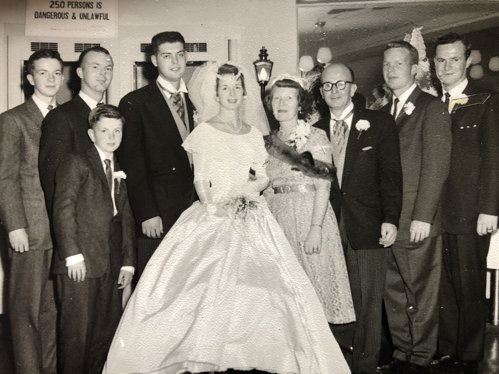
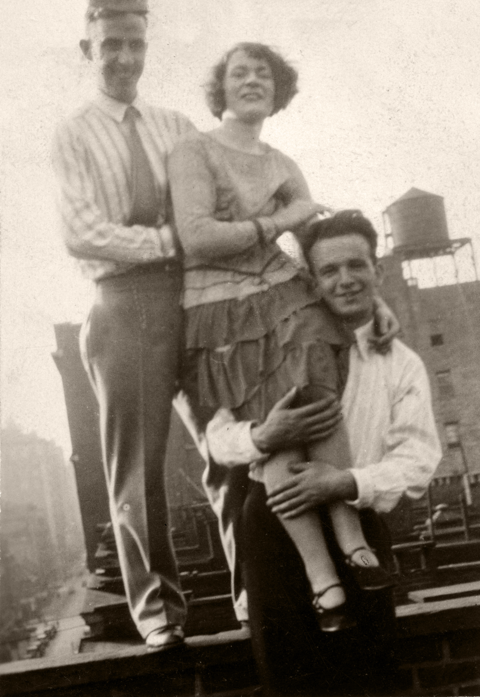

Edward Joseph Duffy and Mary "Mae" Ellen Torpey

(l. to r.) Michael Duffy, Edward Duffy, Brian Duffy, George Alfred Greenslade II, Marie Ann Duffy, Mary "Mae" Ellen Torpey, Edward Duffy, Jay Duffy and Kevin Duffy
December 26, 1959

Mary "Mae" Ellen Duffy, Marie Ann Duffy, George Alfred Greenslade IV and George Alfred Greenslade III
2002

St. Raymond's Cemetery, Bronx, New York
DUFFY
Beloved Husband And Father
1907 Edward J. 1975
Beloved Wife And Mother
1908 Mary E. "Mae" 2004
Beloved Brother
Patrick O. Torpey
1906 - 1983